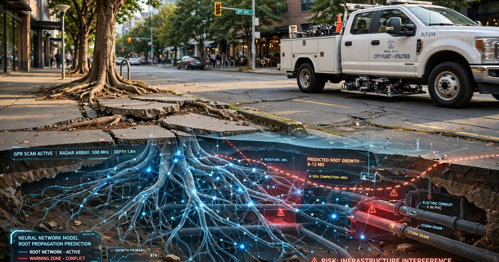

System and Method for Predictive Urban Tree Root Infrastructure Conflict Detection Using Fleet-Mounted Ground-Penetrating Radar and Physics-Informed Neural Network Root Growth Modeling

Abstract
Disclosed is a system and method for predicting conflicts between urban tree root systems and subsurface infrastructure before physical damage occurs. The system mounts compact ground-penetrating radar (GPR) antenna arrays on municipal fleet vehicles (refuse trucks, street sweepers, utility vans) that repeatedly traverse the same street corridors on fixed schedules. Each pass acquires 800 MHz and 1.6 GHz dual-frequency B-scan radargrams of the upper 2 meters of subsurface, from which an automated root detection pipeline identifies hyperbolic radar reflection signatures characteristic of woody roots exceeding 15 mm diameter. A temporal differencing module compares sequential scans of the same corridor (separated by weeks to months) to measure root tip advance rates and branching events. A physics-informed neural network (PINN) trained on the Couvreur-Javaux root water uptake model, the Dupuy structural anchorage model, and species-specific allometric growth tables projects each detected root system's three-dimensional growth trajectory 2 to 10 years into the future. The predicted root envelopes are intersected with a GIS-registered subsurface utility map (water mains, sewer laterals, gas lines, fiber conduit, electrical duct banks) and surface hardscape layer (sidewalk panels, curb lines, roadway base courses) to generate conflict probability scores for each tree-infrastructure pair. Municipal arborists receive prioritized intervention lists recommending root pruning, root barrier installation, species replacement, or utility rerouting ranked by projected damage cost and time-to-impact.
Field of the Invention
This invention relates to urban forestry management and subsurface infrastructure protection, specifically to the automated detection of tree root growth trajectories using vehicle-mounted ground-penetrating radar and predictive modeling for early identification of root-infrastructure conflicts in municipal environments.
Background
Urban tree root damage to infrastructure imposes substantial costs on municipalities. The USDA Forest Service estimated that sidewalk and curb damage from tree roots costs U.S. cities $270 million annually in direct repair expenses. A McPherson et al. (2016) study of 18 California cities found that root-related infrastructure repairs consumed 25% of total urban forest management budgets, averaging $14 per tree per year in reactive maintenance costs. Sewer line intrusion by roots accounts for roughly 50% of all sewer blockages in cities with mature tree canopies, per EPA National Pollutant Discharge Elimination System compliance data.
Current root management practices are reactive and episodic:
- Visual surface inspection: Municipal arborists and public works crews respond to visible symptoms: sidewalk heaving, curb displacement, pavement cracking, repeated sewer backups. By the time surface evidence appears, root intrusion into infrastructure has typically progressed for 3 to 8 years. Repair costs at this stage average $2,000 to $5,000 per sidewalk section and $5,000 to $25,000 per sewer lateral replacement (Mullaney et al., Urban Forestry & Urban Greening, 2015).
- Manual root mapping: Air excavation (AirSpade) exposes root systems for visual mapping without cutting. Cost: $1,500 to $4,000 per tree. Non-scalable for city-wide assessment of 50,000 to 500,000 street trees. Destructive to root zone soil structure even when roots themselves are preserved.
- Periodic GPR surveys: Commercial GPR surveys for root mapping have been demonstrated in research (Butnor et al., Journal of Forestry Research, 2001; Barton and Montagu, Computers and Electronics in Agriculture, 2004). These require dedicated survey crews with cart-mounted GPR units, costing $500 to $2,000 per tree. They produce point-in-time snapshots without temporal change detection. No commercial service currently offers predictive root growth projection.
- Root barrier installation: Linear HDPE barriers (30 to 36 inches deep) deflect root growth away from infrastructure. Cost: $25 to $50 per linear foot installed. Effective only when installed before root arrival. Currently deployed reactively after damage, reducing efficacy by 60% or more (Costello et al., Journal of Forestry, 2000).
Ground-penetrating radar detection of tree roots has been validated in the arboriculture literature. Butnor et al. (2001) demonstrated that 400 MHz and 900 MHz GPR antennas can resolve woody roots as small as 10 mm diameter in sandy soils at depths up to 1.5 meters, with detection accuracy declining in clay-rich or wet soils due to signal attenuation. Guo et al. (2013) applied hyperbolic fitting to GPR radargrams to estimate root diameter from reflection amplitude and apex curvature with ±3 mm accuracy in controlled settings. More recently, Wu et al. (2020) used convolutional neural networks to automate root detection in GPR B-scans, achieving 88% precision and 82% recall on field data from 47 urban trees.
Physics-informed root growth modeling has been explored in forestry and agronomy. The Couvreur et al. (Hydrology and Earth System Sciences, 2012) macroscopic root water uptake model simulates root system water acquisition as a function of soil water potential, root length density, and root hydraulic conductance. The Dupuy et al. (2005) structural-mechanical model of root anchorage computes root growth direction in response to mechanical loading from wind, gravity, and soil resistance. Neither has been combined with GPR temporal data to produce data-assimilated predictive growth trajectories for urban infrastructure protection.
The gap in the art is a system that: (a) acquires GPR subsurface root data passively and repeatedly using existing fleet vehicles at near-zero marginal survey cost, (b) performs temporal change detection to measure actual root advance rates in situ, (c) projects growth trajectories using physics-informed neural networks constrained by validated root growth models, and (d) intersects predicted root envelopes with utility and hardscape GIS layers to generate quantitative conflict risk scores years before damage occurs.
Detailed Description
1. Fleet-Mounted GPR Hardware
A compact dual-frequency GPR antenna assembly is mounted to the undercarriage of municipal fleet vehicles that traverse the same street corridors on regular schedules. Preferred fleet types include refuse collection trucks (weekly routes), street sweepers (bi-weekly routes), and utility maintenance vans (monthly coverage of the full street network). The antenna assembly comprises:
- An 800 MHz shielded dipole antenna (penetration depth: 1.5 to 2.5 meters in typical urban soils, resolution: approximately 50 mm) for deep root detection and utility pipe identification.
- A 1.6 GHz shielded dipole antenna (penetration depth: 0.5 to 1.2 meters, resolution: approximately 25 mm) for shallow root detail and fine root branching structure.
- A GNSS receiver (dual-frequency L1/L5, RTK-corrected via NTRIP caster, horizontal accuracy ±20 mm) for georeferencing each radar trace to a common spatial reference frame.
- A vehicle-mounted IMU (6-axis, MEMS) for compensating antenna height variations due to vehicle suspension travel and road surface irregularities.
- An embedded acquisition controller (e.g., NVIDIA Jetson Orin Nano, 40 TOPS INT8) that triggers radar pulses at 2 cm spatial intervals based on a wheel-mounted optical encoder, stores raw radargrams to a 2 TB NVMe SSD, and performs initial on-device preprocessing.
The antenna assembly is housed in a ruggedized HDPE enclosure (600 mm × 300 mm × 100 mm) mounted 150 to 250 mm above the road surface on adjustable brackets that accommodate different vehicle ground clearances. Total hardware cost per vehicle installation: $8,000 to $12,000, amortized across 200 to 500 survey passes per year. Survey speed: the system operates at normal driving speeds (15 to 40 km/h) without requiring the vehicle to slow or stop, unlike cart-mounted commercial GPR systems that typically require walking-speed operation (3 to 5 km/h).
2. Automated Root Detection Pipeline
Raw B-scan radargrams undergo a multi-stage processing pipeline:
- Background removal: A moving-window mean subtraction (window width: 200 traces) removes the direct-wave coupling and horizontal banding artifacts. A singular value decomposition (SVD) filter retains only the first 5 to 15 singular values to suppress random noise while preserving hyperbolic reflections.
- Velocity estimation: Diffraction hyperbola fitting on detected point reflectors estimates local soil dielectric permittivity (εr, typically 4 to 25 for urban soils) and corresponding electromagnetic wave velocity (0.06 to 0.15 m/ns). A Bayesian velocity model interpolates point estimates across the survey corridor to account for spatially varying soil conditions.
- Migration: Kirchhoff migration collapses diffraction hyperbolas to their apex positions, converting the time-domain B-scan into a depth-migrated cross-section with ±25 mm spatial accuracy at 800 MHz.
- Root candidate detection: A U-Net semantic segmentation network (encoder: ResNet-34 pretrained on ImageNet, decoder: 4 upsampling blocks with skip connections) labels each pixel in the migrated radargram as root, utility pipe, rock/debris, soil layer boundary, or background. Training data comprises 12,000 manually annotated radargram patches from 8 cities across 4 USDA hardiness zones, augmented with synthetic radargrams generated by gprMax finite-difference time-domain simulation with randomized root geometries and soil profiles.
- Root characterization: For each detected root segment, the pipeline estimates diameter (from reflection amplitude, calibrated against known-diameter buried PVC references), depth (from two-way travel time and local velocity), and orientation angle (from the hyperbola's azimuthal asymmetry in crossed-dipole antenna configurations). A connected-component analysis groups co-linear root segments into candidate root paths.
3. Temporal Change Detection
The system exploits the repeated traversal of fleet routes to build a temporal stack of georeferenced radargrams for each street corridor. A registration module aligns sequential scans using GNSS positions and cross-correlation of persistent subsurface features (utility pipes, rock interfaces, building foundations) as fiducial references. After registration, temporal differencing detects three categories of change:
- New root appearance: A root reflection present in scan N that was absent in scan N-1 (after accounting for detection probability and soil moisture variation) indicates a root tip that has advanced into the scan corridor since the previous pass.
- Root diameter growth: Increasing reflection amplitude at a persistent root location indicates radial thickening. Calibrated amplitude-to-diameter relationships (established during system commissioning using air-excavated reference roots) convert amplitude change to growth rate in mm/year.
- Branching events: The appearance of new root segments originating from an existing root path indicates lateral branching. Branch angle and initial diameter are recorded for growth model input.
A minimum of 4 temporal scans spanning 6 months is required to establish a statistically significant growth trend for a given root system. Seasonal soil moisture variation is compensated by normalizing reflection amplitudes against a reference reflector (the known-diameter utility pipe nearest to each tree) that does not change size between scans.
4. Physics-Informed Neural Network Growth Prediction
A physics-informed neural network (PINN) predicts each root system's three-dimensional growth trajectory over a 2 to 10 year forecast horizon. The PINN architecture embeds three physical constraint layers into a standard feedforward network (6 hidden layers, 256 units each, swish activation):
- Water uptake constraint (Couvreur model): Root elongation rate is governed by the local soil water potential gradient. The PINN loss function includes a term penalizing predictions where root growth direction diverges from the gradient of soil water potential, computed from a Richard's equation solver initialized with local soil texture (from USDA SSURGO database), precipitation history (from PRISM Climate Group gridded data), and irrigation records (from municipal water billing data, where available).
- Mechanical constraint (Dupuy model): Root growth direction is deflected by soil mechanical resistance. The PINN enforces a constraint that predicted root paths follow the line of least mechanical resistance, computed from soil bulk density (estimated from GPR velocity) and the presence of preferential growth channels (existing utility trenches, gravel backfill, old root channels from removed trees).
- Allometric constraint: Total predicted root system extent must remain consistent with species-specific allometric relationships between trunk diameter at breast height (DBH), crown radius, and root system radius. DBH and crown radius are obtained from municipal tree inventories (e.g., TreeKeeper, OpenTreeMap) or from LiDAR canopy measurements where available. The Day et al. (Journal of Arboriculture, 2010) dataset of excavated root systems from 19 urban tree species provides allometric scaling coefficients.
The PINN is trained on the temporal GPR root observation sequence (observed positions at times t1, t2, ..., tn) with the physical constraints acting as regularization terms in the loss function (weighted sum: data fit λ_data = 1.0, water uptake λ_water = 0.3, mechanical λ_mech = 0.5, allometric λ_allom = 0.2). The trained PINN then extrapolates root positions forward in time, producing a probabilistic 3D root envelope (voxelized at 100 mm resolution) with 50th, 75th, and 95th percentile growth boundaries.
5. Infrastructure Conflict Scoring
The predicted root envelope is intersected with two GIS layers:
- Subsurface utility layer: Registered locations of water mains, sewer mains and laterals, gas distribution lines, telecommunications conduit, and electrical duct banks, sourced from municipal utility maps (GIS shapefiles from the public works department) and supplemented by utility detections from the GPR scans themselves. Each utility segment is assigned a vulnerability coefficient based on material (clay sewer pipe: 0.95, PVC sewer: 0.3, ductile iron water main: 0.15, HDPE gas: 0.05) and joint type (bell-and-spigot clay joints: 0.98 vulnerability, fusion-welded HDPE: 0.02).
- Surface hardscape layer: Sidewalk panel boundaries, curb lines, roadway edge, driveway aprons, and building foundations digitized from municipal GIS or extracted from high-resolution orthoimagery. Each hardscape element is assigned a displacement damage threshold (sidewalk panel: 12 mm vertical displacement triggers ADA non-compliance; curb: 25 mm; roadway base: 50 mm).
For each tree-infrastructure pair, the system computes a conflict probability score:
P_conflict(t) = P_root_arrival(t) × V_infrastructure × (1 - P_barrier)
where P_root_arrival(t) is the probability that the predicted root envelope intersects the infrastructure element by time t (from the PINN output), V_infrastructure is the vulnerability coefficient, and P_barrier is the probability that an existing root barrier or compacted soil layer will deflect the root before contact (estimated from GPR observations of barrier integrity).
The system also estimates projected damage cost for each conflict, derived from municipal repair cost databases: sewer lateral replacement ($8,000 to $22,000), sidewalk panel replacement ($800 to $2,500), curb reconstruction ($2,000 to $5,000), water main repair ($15,000 to $40,000), and gas line exposure remediation ($5,000 to $15,000). The product of conflict probability and projected damage cost yields an expected loss value that serves as the primary ranking metric for intervention prioritization.
6. Municipal Decision Support Interface
A web-based dashboard presents:
- City-wide risk heatmap: Color-coded street segments showing aggregate root-infrastructure conflict risk, with drill-down to individual tree-infrastructure pairs.
- Prioritized intervention list: Trees ranked by expected loss value, with recommended intervention type for each: root pruning (estimated cost: $500 to $1,500, effective when root is more than 1 meter from infrastructure), root barrier installation (estimated cost: $1,500 to $4,000, effective when root is 1 to 5 years from infrastructure contact), species replacement with a small-rooted cultivar (estimated cost: $2,000 to $5,000, recommended when multiple infrastructure conflicts are predicted within 5 years), or utility rerouting (estimated cost: $10,000 to $50,000, recommended only when the tree is heritage-protected and the utility is highly vulnerable).
- Return-on-investment calculator: For each recommended intervention, the system computes the ratio of prevented damage cost to intervention cost. Interventions with ROI below 1.5 are flagged as potentially not cost-effective.
- Temporal animation: A time-slider visualization shows the predicted root system expansion over the forecast horizon, with infrastructure elements highlighted as they enter the conflict zone.
7. Figures Description
- Figure 1: System architecture showing fleet vehicle with underslung GPR antenna array, GNSS receiver, and edge compute unit; wireless data offload to municipal server; root detection pipeline; PINN growth prediction module; GIS intersection engine; and decision support dashboard.
- Figure 2: Dual-frequency B-scan radargram of a street corridor showing hyperbolic reflections from tree roots at 0.3 to 1.2 m depth, a clay sewer lateral at 1.5 m depth, and a water main at 1.8 m depth. Root reflections are distinguished from utility reflections by their irregular spacing, smaller amplitude, and clustering around known tree positions.
- Figure 3: Temporal difference radargram showing root tip advance of 180 mm over 6 months. New root material appears as positive-amplitude anomalies in the differenced image, while persistent features cancel to zero.
- Figure 4: PINN-predicted root envelope (50th, 75th, 95th percentile boundaries) for a Platanus × acerifolia (London plane tree, DBH 450 mm) projected 5 years forward, shown in plan view with subsurface utility overlay. The 75th percentile boundary intersects a 150 mm clay sewer lateral at year 3.2 with a conflict probability of 0.72.
- Figure 5: Municipal dashboard showing prioritized intervention list for a 12-block neighborhood. Top entry: Quercus agrifolia (coast live oak) at 300 block of Elm Street, predicted sewer lateral intrusion in 2.4 years, intervention recommendation: root barrier installation ($2,800), prevented damage: $14,000, ROI: 5.0.
Claims
- A system for predicting conflicts between urban tree root systems and subsurface infrastructure, comprising: a ground-penetrating radar antenna assembly mounted on a municipal fleet vehicle that traverses street corridors on a regular schedule; an automated root detection pipeline that identifies woody root reflections in georeferenced radargrams; a temporal change detection module that measures root advance rates and branching events by comparing sequential scans of the same corridor acquired on different dates; and a physics-informed neural network that projects root growth trajectories forward in time by embedding root water uptake, mechanical deflection, and allometric growth constraints into its loss function.
- The system of claim 1, wherein the ground-penetrating radar antenna assembly comprises dual-frequency antennas operating at approximately 800 MHz and 1.6 GHz, acquiring simultaneous deep (1.5 to 2.5 m) and shallow (0.5 to 1.2 m) subsurface profiles at normal fleet vehicle driving speeds of 15 to 40 km/h.
- The system of claim 1, wherein the automated root detection pipeline comprises a U-Net semantic segmentation network trained on manually annotated radargram patches and synthetic radargrams generated by finite-difference time-domain electromagnetic simulation with randomized root geometries and soil profiles.
- The system of claim 1, wherein the temporal change detection module aligns sequential scans using GNSS positions and cross-correlation of persistent subsurface features as fiducial references, and normalizes reflection amplitudes against known-diameter utility pipe reflections to compensate for seasonal soil moisture variation.
- The system of claim 1, wherein the physics-informed neural network embeds the Couvreur macroscopic root water uptake model as a constraint term in its loss function, penalizing predicted root growth directions that diverge from the soil water potential gradient computed from local soil texture, precipitation history, and irrigation records.
- The system of claim 1, further comprising an infrastructure conflict scoring module that intersects the predicted root envelope with GIS-registered subsurface utility maps and surface hardscape layers, computing a conflict probability for each tree-infrastructure pair as a function of root arrival probability, infrastructure material vulnerability, and existing root barrier efficacy.
- The system of claim 6, further comprising an expected damage cost estimator that multiplies the conflict probability by a projected repair cost derived from municipal cost databases, and ranks tree-infrastructure pairs by expected loss value for intervention prioritization.
- The system of claim 1, further comprising a decision support module that recommends intervention type (root pruning, root barrier installation, species replacement, or utility rerouting) based on the predicted time-to-conflict, root distance from infrastructure, tree heritage protection status, and intervention return-on-investment ratio.
- A method for predictive urban tree root management comprising: repeatedly acquiring georeferenced ground-penetrating radar profiles of street corridors using fleet vehicles on regular routes; detecting and tracking individual root systems across temporal scan sequences; projecting root growth trajectories using a neural network constrained by physical root growth models; intersecting projected root envelopes with subsurface utility and surface hardscape spatial data; and generating prioritized intervention recommendations ranked by expected damage cost and return on investment.
- The method of claim 9, wherein the fleet vehicles are municipal refuse trucks, street sweepers, or utility vans that traverse the same corridors on weekly to monthly schedules, enabling temporal root growth measurement at near-zero marginal survey cost above the vehicle's primary operational budget.
- The method of claim 9, further comprising a seasonal compensation procedure that normalizes radar reflection amplitudes against persistent non-biological subsurface reflectors to isolate root growth signals from apparent amplitude changes caused by soil moisture and temperature variation.
Implementation Notes
The system's economic viability hinges on the near-zero marginal cost of data acquisition once GPR hardware is installed on existing fleet vehicles. A city operating 50 refuse trucks, each covering 100 km of streets weekly, surveys 5,000 km of street corridor per week. Over a year, each corridor receives approximately 50 repeat surveys, providing the temporal sampling density required for root growth rate estimation. The hardware cost of $8,000 to $12,000 per vehicle installation, amortized across 50 vehicles and a 5-year hardware lifecycle, yields a per-kilometer annual survey cost of approximately $0.08, compared to $50 to $200 per meter for dedicated commercial GPR root surveys.
Key implementation challenges include: soil type variability within a single city (clay soils attenuate GPR signals significantly, limiting effective detection depth to 0.8 to 1.0 meters versus 2.0+ meters in sandy soils); interference from rebar in concrete sidewalks and road base aggregate; the computational cost of running PINN inference for hundreds of thousands of trees city-wide (mitigated by batch processing on cloud GPU instances during off-peak hours); and the accuracy of municipal utility maps, which often contain positional errors of 0.5 to 2 meters for laterals installed before GPS-era records.
Potential extensions include integration with smart water meter data (sudden consumption spikes indicating root-caused pipe leaks), sewer CCTV inspection footage (providing ground truth for root intrusion predictions), and municipal LiDAR canopy surveys (providing above-ground tree parameters for improved allometric constraints). A federated learning architecture could enable multiple cities to collaboratively improve the PINN model without sharing raw subsurface data, which may contain sensitive utility location information.
Prior Art References
- USDA Forest Service — Urban tree root damage cost estimates ($270M/year U.S.)
- McPherson et al., Urban Forestry & Urban Greening, 2016 — Root-related infrastructure costs in California cities
- EPA NPDES — Sewer blockage statistics attributable to root intrusion
- Mullaney et al., Urban Forestry & Urban Greening, 2015 — Sidewalk and sewer repair costs from tree roots
- Butnor et al., Journal of Forestry Research, 2001 — GPR detection of tree roots at 400/900 MHz
- Barton and Montagu, Computers and Electronics in Agriculture, 2004 — GPR root mapping methodology
- Guo et al., Geoderma, 2013 — Hyperbolic fitting for GPR root diameter estimation
- Wu et al., Remote Sensing of Environment, 2020 — CNN-based automated root detection in GPR B-scans
- Couvreur et al., Hydrology and Earth System Sciences, 2012 — Macroscopic root water uptake model
- Dupuy et al., Plant, Cell & Environment, 2005 — Structural-mechanical root anchorage model
- Day et al., Journal of Arboriculture, 2010 — Urban tree root system allometric relationships
- Costello et al., Journal of Forestry, 2000 — Root barrier effectiveness studies
- USDA SSURGO — Soil Survey Geographic Database for soil texture inputs
- PRISM Climate Group — Gridded precipitation data for root water uptake modeling
- gprMax — Open-source FDTD electromagnetic simulation for synthetic GPR training data